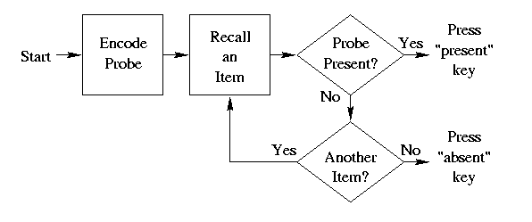
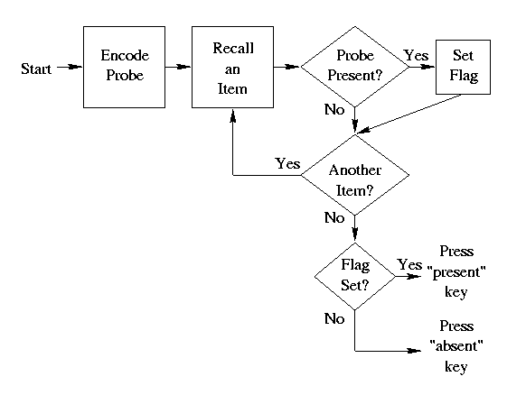
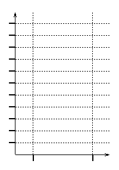

Introduction. Suppose you and a friend are considering joining a soccer team. With your friend standing nearby, you telephone the team's coach and ask who else is on the team. The coach says, "So far, we have confirmation from Melissa, Jason, Abbey, George, Martha, Jim and Beth." After you hang up, your friend asks you, "Well, is Jason on the team yet?" If you weren't monitoring the coach's list for "Jason" as the coach was telling you, you would have to search your memory of the phone call to answer your friend's question. Do you think it would be easier to answer the question if the coach gave you a long list of names or a short list? Do you think you could answer the question faster if Jason was on the list or not on the list?
This sort of situation illustrates people's use of short-term memory (STM), and it can be brought into the laboratory for controlled study. A popular experimental method used for studying short term memory was introduced by S. Sternberg in the 1960's. In this scanning paradigm, a participant sees a set of items, such as numerals, which she must remember for a few seconds. Then she sees a "probe" item, such as another numeral, and she must indicate as quickly as possible whether the probe item appeared in the set of items that is being remembered. Thus, the participant must quickly scan her short term memory to determine whether the probe item was in the initial set of items. The participant indicates her response by pressing a key if the probe is present, and pressing a different key if the probe is absent.
The probe item is presented to the participant suddenly, and the experimenter measures the time it takes for the viewer to carry out her STM scan and respond. Participants are told to maintain high accuracy, so the crucial dependent variable (D.V.) is response time (RT).
For example, the participant might be told to remember this set of numerals: 5,2,7,1. These numerals are then removed, and the participant must remember them. After a moment, a probe item appears, such as 2, and the participant must indicate as quickly as possible whether or not this probe was in the memory set. In this case the probe did appear in the memory set, so the correct response is to press the "present" key.
There are at least three independent variables (I.V.'s) that are of interest to us for this assignment. One is whether the probe is present or absent. A second I.V. is the number of items in the memory set. The table below shows examples of memory sets in which the probe ("3") is absent or present, with low (1) or high (4) number of items in the memory set.
| Memory Set Size | ||
| 1 Item | 4 Items | |
|
Probe ("3") Absent |
"4" | "5,7,4,1" |
|
Probe ("3") Present |
"3" | "5,3,7,1" |
A third I.V. is whether the probe item is presented clearly or degraded with "noise". If the stimuli are acoustic, then the noise could be like radio "static." If the stimuli are visual, then the noise could be salt-and-pepper smudges superimposed on the display. The effect of stimulus degradation will be discussed more below.
Goal. The specific goal for this homework assignment is for you to derive predicted response time graphs for two different simple theories of STM scanning. In lecture and in the textbook, we'll learn about results from actual experiments, so we can see which theory better fits real human performance. The more general goal of this assignment is for you to better understand theories and their relation to data in cognitive psychology.
The two theories. Professor Kruschke emphasizes that a theory must specify both the representation of information and the process that acts on the representation. The two theories presented here are not very explicit about the representations they assume, and instead the emphasis is on the different processes they assume. So, you'll be deriving predictions for two different kinds of processing.
Theory 1: Serial, Self-Terminating Processing of Items. It's possible that people can only recall one item at a time. Each item must be checked, one at a time, to see whether it matches the probe or not. A flowchart of this processing is shown below. The flowchart starts after the memory set is already stored in memory. This flowchart does not indicate which items get scanned in what order, nor how the person keeps track of which items have already been checked. We'll simply assume that the rememberer checks items at random, with each item mentally marked once it's been checked. Each stage in the flowchart takes a certain amount of time. In particular, the loop of arrows, from "Recall an Item" through "Probe Present?" and finally through "Another Item", takes extra time for every additional item that needs to be checked. In this flowchart, we assume that if an item is checked and it turns out to match the probe, then further checking of items is immediately stopped and the "present" key is pressed. Because of this automatic stopping mechanism, this kind of serial processing is called self-terminating.
|  |
An animated flowchart for self-terminating serial search is available on the web.
Theory 2: Serial, Exhaustive Processing of All Items. As in the previous theory, it's possible that people can only recall one item at a time, but instead of stopping as soon as the probe is found, scanning continues until the full memory set is exhausted. A flowchart of this processing is shown below. The flowchart starts after the memory set is already stored in memory. As in the previous theory, this new flowchart does not indicate which items get scanned in what order, nor how the person keeps track of which items have already been checked. Again we'll simply assume that the rememberer checks items at random, with each item mentally marked once it's been checked. Also as in the previous theory, each stage in the flowchart takes a certain amount of time. In particular, the loop of arrows, from "Recall an Item" through "Probe Present?" and finally through "Another Item", takes extra time for every additional item that needs to be checked.
|  |
An animated flowchart for exhaustive serial search is available on the web.
What's new for this exhaustive scanning flowchart is what happens if the probe is present in the memory set. Instead of stopping, a "flag" is set, which marks the fact that the probe is present. Only after all the items have been scanned does the process check whether the flag has been set or not. If the flag has been set, then the "present" key is pressed. If the flag has not been set, then the "absent" key is pressed.
Why might a memory system behave this (exhaustive) way? Isn't self-terminating scanning more reasonable? One possible answer is that the processing loop -- recall an item, probe present?, another item? -- is tightly integrated and "ballistic", so that it is difficult and time consuming to interrupt and stop. But setting a mental flag might be simple and fast. (N.B.: This is just one interpretation. Other theories abound.)
Compute the predicted response times. You need to determine the mean response times predicted by the two theories, for each of the four example displays shown above. To make the numbers concrete, we'll suppose that each stage in the flowcharts above takes a certain amount of time, as follows:
| Stage | Time in msec |
| Start | 300 |
| Encode Probe | 30 |
| Recall an Item | 20 |
| Probe Present? | 10 |
| Another Item? | 10 |
| Set Flag | 10 |
| Flag Set? | 10 |
| Press "present" Key | 30 |
| Press "absent" Key | 40 |
Go through each stage of the flowcharts and add up the time it takes to go through from Start to Respond. The tables below list the stages in order; carefully fill in the durations of each stage and compute the overall durations.
|
|
||||||||||||||||||||||||||||||||||||||||||||||||||||||||||||||||||||||
|
|
||||||||||||||||||||||||||||||||||||||||||||||||||||||||||||||||||||||
Careful! Remember from the homework regarding visual search that it is a little bit tricky to determine how many times to iterate the recall-an-item loop in self-terminating search. You should compute the mean time required to find the Probe.
|
|
||||||||||||||||||||||||||||||||||||||||||||||||||||||||||||||||||||||||||||||||||||||
|
|
||||||||||||||||||||||||||||||||||||||||||||||||||||||||||||||||||||||||||||||||||||||
Make graphs of the predicted response times. Blank graph templates are provided below, one for plotting the predicted RTs of the parallel processing theory, and the other for plotting the predicted RTs of the serial processing theory. The vertical axis is the dependent variable. The horizontal axis should be the independent variable, number of items (memory set size). Your graphs should have separate lines for each value of the other independent variable, probe present or absent. Thus each graph should plot four points, one point for each of the four examples provided in the Introduction. Connect the points within a graph that refer to probe present, and connect the points within a graph that refer to probe absent. Important: Label all the axes, label the tic marks on the axes, and label the lines you plot.
| Self-Terminating Scan | Exhaustive Scan |
|  |
Predictions for Degraded, "Noisy" Probe. (The goal for this section of the assignment is to derive the predicted RT graphs shown on p.105 of Reed, 4th Ed.) If the probe is degraded, i.e., made difficult to see because of "noise" or smudges, then memory scanning should be made more difficult and slowed down. We can ask whether a degraded probe affects only the difficulty of the initial encoding of the probe, or whether a degraded probe instead affects the comparison of recalled items for every recalled item. In terms of the flowcharts, we can ask whether degrading the probe affects only the "Encode Probe" (encoding) stage or only the "Probe Present?" (comparison) stage.
To make the numbers concrete, suppose that if probe degradation affects only the "Encode Probe" (encoding) stage, then the time taken by this stage increases from 30 msec to 100 msec. Moreover, suppose that if probe degradation affects only the "Probe Present?" (comparison) stage, then the time taken by this stage increases from 10 msec to 30 msec. Now, go through each stage of the flowcharts and compute the total time it would take to get from Start to Respond. The tables below list the various stages; fill in the blanks appropriately.
|
|
||||||||||||||||||||||||||||||||||||||||||||||||||||||||||||||||||||||||||||||||||||||
|
|
||||||||||||||||||||||||||||||||||||||||||||||||||||||||||||||||||||||||||||||||||||||
Make graphs of the predicted RTs for degraded probes. Blank graph templates are provided below, one for plotting the predicted RTs of degraded comparison, and the other for plotting the predicted RTs of degraded encoding. The vertical axis is the dependent variable. The horizontal axis should be the independent variable, number of items (memory set size). Each graph should also contain a line for predictions with an intact probe (which you computed previously). Your graphs should look something like Figure 4.9, p.105, of Reed 4th Ed. Important: Label all the axes, label the tic marks on the axes, and label the lines you plot, in more detail than Figure 4.9 of Reed!
| Degraded Probe Comparison | Degraded Probe Encoding |
So what? What does this tell us about memory? We'll discuss in lecture (and you can read in the textbook) which of these processing theories best fits human performance. By understanding the predictions of different theories, and comparing these predictions with human data, we can determine which theories are wrong. Sometimes the most intuitively plausible theory is shown to be wrong! Understanding of the theories also allows us to infer what happens in various sub-stages of processing in memory. Keep in mind, however, that just because a theory fits human data does not mean that the theory is correct -- there might be some other, completely different theory, that fits the data just as well!
To learn more: See, for example, an article by Saul Sternberg, Memory scanning: New findings and current controversies. Quarterly Journal of Experimental Psychology, v.27, 1975, pp.1-32.
Grading criteria. This homework assignment is worth up to 15 points. Points are deducted for inaccuracies or omissions. (Click here to read the Late Policy.)
What do you think of this assignment? Only after the lecture discussing this topic, please provide your evaluation of this assignment. To fill out an evaluation form and get 2 points for your effort, click here.
Copyright © 1997 by John K. Kruschke